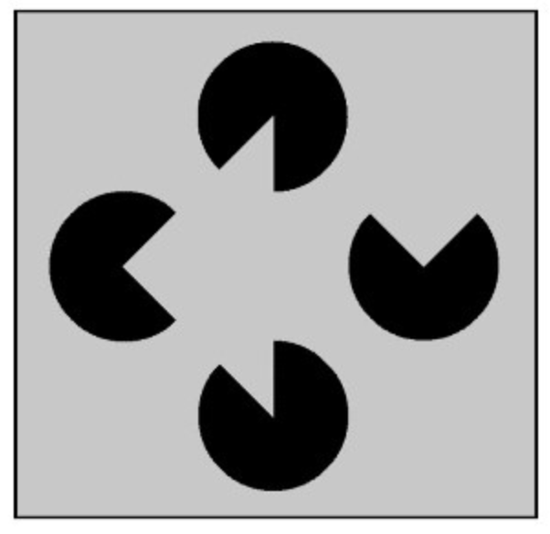
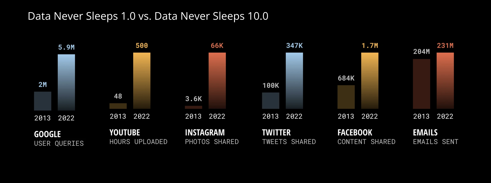

[1] "double"R basics
Data Science for Studying Language and the Mind
Katie Schuler
2024-08-28
Syllabus
Follow along on the syllabus!
Paperwork
When you arrive, complete this anonymous form: Who’s in class
You can also join the waitlist if you are not enrolled
Announcements
- The course is full and the room is full
- Ways to join:
- Watch for an opening (highest odds of getting in)
- Add your name to our waitlist
Course description
Data Sci for Lang & Mind is an entry-level course designed to teach basic principles of statistics and data science to students with little or no background in statistics or computer science. Students will learn to identify patterns in data using visualizations and descriptive statistics; make predictions from data using machine learning and optimization; and quantify the certainty of their predictions using statistical models. This course aims to help students build a foundation of critical thinking and computational skills that will allow them to work with data in all fields related to the study of the mind (e.g. linguistics, psychology, philosophy, cognitive science, neuroscience).
Prerequisites
There are no prerequisites beyond high school algebra. No prior programming or statistics experience is necessary, though you will still enjoy this course if you already have a little. Students who have taken several computer science or statistics classes should look for a more advanced course.
Teaching team
Instructor: Dr. Katie Schuler (she/her)
TAs:
- Brittany Zykoski
- Mingyang Bian
About me, your instructor (Katie)
You can call me Professor Schuler or Katie, whichever makes you more comfortable
I live in Mt Airy with my husband and two kids (Dory, 2 and Joan, 6)
At Penn I also have a research lab, the Child Language Lab and am on the Natural Science and Math Panel (a group focused on improving inclusive teaching in STEM at Penn).
I’m a first-generation college student from Western NY. I worked 40 hours a week to put myself through college; I am still paying off my student loans.
My assumptions about you
You are an honest, kind, and hardworking person who wants to do well in and enjoy this class
You are very busy, and will sometimes have to prioritize other things above this class.
Course overview
Data science
Data science is about making decisions based on incomplete information.

This concept is not new. Brains were built for doing this!
But we have new tools and lots more data!

Data science workflow
The folks who wrote R for Data Science proposed the following data science workflow:

Overview of course
We will spend the first few weeks getting comfortable programming in R, including some useful skills for data science:
- R basics
- Data visualization
- Data wrangling (import, tidy, and transform)
Overview of course
Then, we will spend the next several weeks building a foundation in basic statistics and model building:
- Sampling distribution
- Hypothesis testing
- Model specification
- Model fitting
- Model evaluation (accuracy and reliability)
Overview of course
Finally if we have time we will cover a selection of more advanced topics that are often applied in language and mind fields, with a focus on basic understanding:
- Feature engineering
- Classification
- Mixed-effect models
Syllabus, briefly
Each week will include two lectures and a lab:
- Lectures are on Tuesdays and Thursdays at 12pm and will be a mix of conceptual overviews and R tutorials. It is a good idea to bring your laptop so you can follow along and try stuff in R!
- Labs are on Thursday or Friday and will consist of (ungraded) practice problems and concept review with TAs. You may attend any lab section that works for your schedule. Lab attendance is required
Syllabus, briefly
There are 10 graded assessments:
- 8 Problem sets (20%) in which you will be asked to apply your newly aquired R programming skills.
- 2 Midterm exams (60%) in which you will be tested on your understanding of lecture concepts.
And 20% is lab attendance.
Syllabus, briefly
There are a few policies to take note of:
- Missed exams cannot be made up except in cases of genuine conflict or emergency (documentation and course action notice required). You may take the optional final exam to replace a missed or low scoring exam.
- You may request an extension on any problem set of up to 3 days. But extensions beyond 3 days will not be granted (because delying solutions will negative impact other students).
- You may submit any missed quiz or problem set by the end of the semester for half-credit (50%), even after solutions are posted.
- We will drop your lowest pset grade, and you can miss up to 2 labs without penalty
Resources
In addition to our course website, we will use the following:
- google colab (r kernel) - for computing
- canvas- for posting grades
- gradescope - for submitting problem sets
- ed discussion - for announcements and questions
Wellness resources
Please consider using these Penn resources this semester:
- Weingarten Center for academic support and tutoring.
- Wellness at Penn for health and wellbeing.
Why R?
With many programming languages available for data science (e.g. R, Python, Julia, MATLAB), why use R?
- Built for stats, specifically
- Makes nice visualizations
- Lots of people are doing it, especially in academia
- Easier for beginners to understand
- Free and open source (though so are Python and Julia, MATLAB costs $)
Many ways to use R
- R Studio
- Jupyter
- VS Code
- and even simply the command line/terminal
Google Colab
- Google Colab is a cloud-based Jupyter notebook that allows you to write, execute, and share code like a google doc.
- We use Google Colab because it’s simple and accessible to everyone. You can start programming right away, no setup required!
Secretly, R!
Google Colab officially supports Python, but secretly supports R (and Julia, too!)
Update 2024: Google Colab now officially supports R!
Update 2025: Google Colab officially supports Julia!
Let’s try it!
Google colab demo
Open a new R notebook:
- colab (r kernel) - use this link to start a new R notebook
File > New notebookand thenRuntime>Change runtime typeto R
Cell types:
+ Code- write and execute code+ Text- write text blocks in markdown
Left sidebar:
Table of contents- outline from text headingsFind and replace- find and/or replaceFiles- upload files to cloud session
Frequently used menu options:
File > Locate in Drive- where in your Google Drive?File > Save- savesFile > Revision history- history of changes you madeFile > Download > Download .ipynb- used to submit assignments!File > Print- printsRuntime > Run all- run all cellsRuntime > Run before- run all cells before current active cellRuntime > Restart and run all- restart runtime, then run all
Frequently used keyboard shortcuts:
Cmd/Ctrl+S- saveCmd/Ctrl+Enter- run focused cellCmd/Ctrl+Shift+A- select all cellsCmd/Ctrl+/- comment/uncomment selectionCmd/Ctrl+]- increase indentCmd/Ctrl+[- decrease indent
You are here
Data science with R
R basics- Data visualization
- Data wrangling
Stats & Model buidling
- Sampling distribution
- Hypothesis testing
- Model specification
- Model fitting
- Model evaluation
More advanced
- Feature Engineering
- Classification
- Mixed-effect models
R Basics
We begin by defining some basic concepts:
Basic concepts
Expressions: fundamental building blocks of programmingObjects: allow us to store stuff, created with assignment operatorNames: names w give objects must be letters, numbers, ., or _Attributes: allow us to attach arbitrary metadata to objectsFunctions: take some input, perform some computation, and return some outputEnvironment: collection of all objects we defined in current R sessionPackages: collections of functions, data, and documentation bundled together in RComments: notes you leave for yourself, not evaluatedMessages: notes R leaves for you (FYI, warning, error)
Expressions
- Expressions are combinations of values, variables, operators, and functions that can be evaluated to produce a result. Expressions can be as simple as a single value or more complex involving calculations, comparisons, and function calls. They are the fundamental building blocks of programming.
10- a simple value expression that evaluates to10.x <- 10- an expression that assigns the value of10tox.x + 10- an expression that adds the value ofxto10.a <- x + 10- an expression that adds the value ofxto10and assigns the result to the variablea
Important functions
Objects
str(x)- returns summary of object’s structuretypeof(x)- returns object’s data typelength(x)- returns object’s lengthattributes(x)- returns list of object’s attributes
Important functions
Environment
ls()- list all variables in environmentrm(x)- remove x variable from environmentrm(list = ls())- remove all variables from environment
Thursday Aug 28
Thursday’s class started here.
Important function
Packages
install.packages()to install packageslibrary()to load package into current R session.data()to load data from package into environmentsessionInfo()- version info, packages for current R session
Important functions
Help
?mean- get help with a functionhelp('mean')- search help files for word or phrasehelp(package='tidyverse')- find help for a package
Vectors
Vectors
are fundamental data structures in R. There are two types:
- atomic vectors - elements of the same data type
- lists - elements refer to any object
Atomic vectors
Atomic vectors can be one of six data types:
typeof(x) |
examples |
|---|---|
| double | 3, 3.32 |
| integer | 1L, 144L |
| character | “hello”, ‘hello, world!’ |
| logical | TRUE, F |
atomic because they must contain only one type
Atomic vectors
Create a vector
with c() for concatenate
Create a vector
with sequences seq() or repetitions rep()
Check data type
with typeof(x) - returns the type of vector x
Check data type
with is.*(x) - returns TRUE if x has type *
Coercion, implicit
If you try to include elements of different types, R will coerce them into the same type without warning (implicit coercion)
Coercion, explicit
You can also use explict coercion to change a vector to another data type with as.*()
More complex structures
More complex structures
Some more complex data structures are built from atomic vectors by adding attributes:
| Structure | Description |
|---|---|
matrix |
vector with dim attribute representing 2 dimensions |
array |
vector with dim attribute representing n dimensions |
data.frame |
a named list of vectors (of equal length) with attributes for names (column names), row.names, and class="data.frame" |
Create more complex structures
Operations
Basic math operators
| Operator | Operation |
|---|---|
() |
Parentheses |
^ |
Exponent |
* |
Multiply |
/ |
Divide |
+ |
Add |
- |
Subtract |
Basic math operations
follow the order of operations you expect (PEMDAS)
Comparison operators
| Operator | Comparison |
|---|---|
x < y |
less than |
x > y |
greater than |
x <= y |
less than or equal to |
x >= y |
greater than or equal to |
x != y |
not equal to |
x == y |
equal to |
Comparison operators
Logical operators
| Operator | Operation |
|---|---|
x | y |
or |
x & y |
and |
!x |
not |
any() |
true if any element meets condition |
all() |
true if all elements meet condition |
%in% |
true if any element is in following vector |
Logical operators
Operations are vectorized
Almost all operations (and many functions) are vectorized
math
Operator coercion
Operators and functions will also coerce values when needed (and without warning)
Subsetting
Subsetting is a natural complement to str(). While str() shows you all the pieces of any object (its structure), subsetting allows you to pull out the pieces that you’re interested in. ~ Hadley Wickham, Advanced R
str()
Subsetting
There are three operators for subsetting objects:
[- subsets (one or more) elements[[and$- extracts a single element
Subset multiple elements with [
| Code | Returns |
|---|---|
x[c(1,2)] |
positive integers select elements at specified indexes |
x[-c(1,2)] |
negative integers select all but elements at specified indexes |
x[c("x", "y")] |
select elements by name, if elements are named |
x[] |
nothing returns the original object |
x[0] |
zero returns a zero-length vector |
x[c(TRUE, TRUE)] |
select elements where corresponding logical value is TRUE |
Subset multiple elements with [
atomic vector
3 ways to extract a single element
| Code | Returns |
|---|---|
[[2]] |
a single positive integer (index) |
[['name']] |
a single string |
x$name |
the $ operator is a useful shorthand for [['name']] |
3 ways to extract a single element
R has many built-in functions
Missing values
NA
- used to represent missing or unknown elements in vectors
- Note that
NAis contageous: expressions includingNAusually returnNA - Check for
NAvalues withis.na()
Programming
functions
are reusable pieces of code that take some input, perform some task or computation, and return an output
control flow
refers to managing the order in which expressions are executed in a program
if…else- if something is true, do this; otherwise do thatforloops - repeat code a specific number of timeswhileloops - repeat code as long as certain conditions are truebreak- exit a loop earlynext- skip to next iteration in a loop
Subsetting quirks
If we have time
Notes on [ with higher dim objects
Notes on [[ and $:
both [[ and [ work for vectors; use [[
$ does partial matching without warning
Questions?
Have a great weekend!